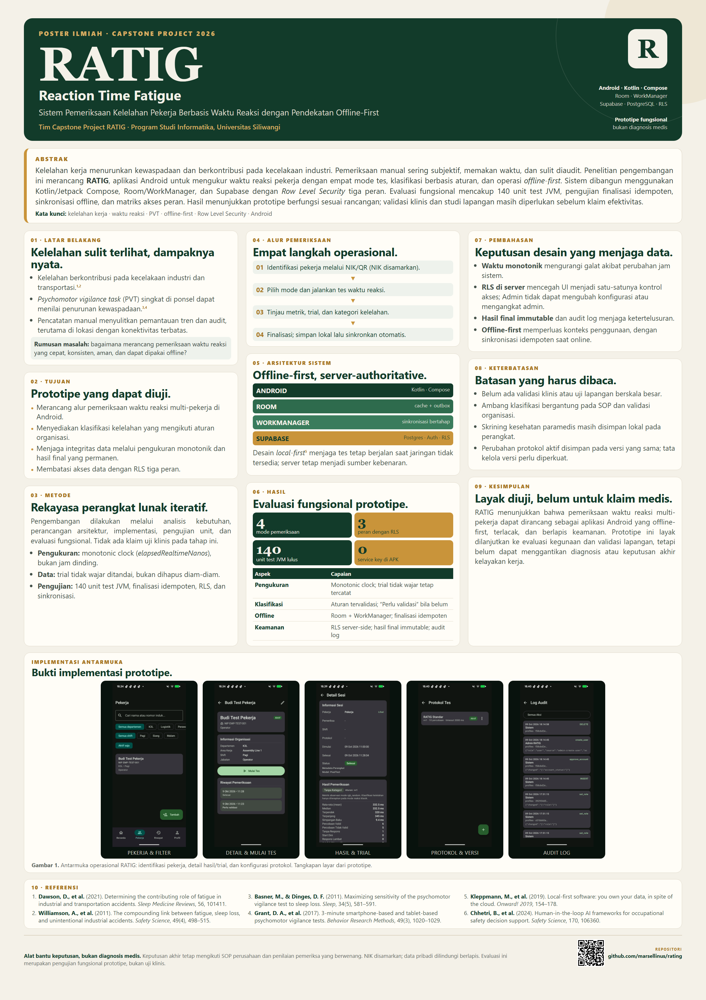

Kelelahan sulit terlihat
Pekerja bisa merasa kuat, padahal refleksnya sudah menurun. Pencatatan manual menyulitkan pemantauan dan audit.
Pemeriksaan kelelahan pekerja berbasis waktu reaksi. Cepat, objektif, dan tetap berjalan tanpa internet.

RATIG adalah alat bantu keputusan, bukan diagnosis medis. Keputusan akhir tetap mengikuti SOP perusahaan.
Pekerja bisa merasa kuat, padahal refleksnya sudah menurun. Pencatatan manual menyulitkan pemantauan dan audit.
Pilih pekerja, jalankan tes, tinjau metrik dan kategori, lalu finalisasi. Data tersimpan lokal dan tersinkron otomatis.
Hanya mode Klasik yang dipakai untuk klasifikasi. Mode lain memberi metrik pengamatan dan tidak digabung menjadi satu skor.
Video demo memakai rekaman UI asli dan narasi Bahasa Indonesia.
Dasbor Super Admin, daftar pekerja, detail hasil, riwayat, konfigurasi protokol, dan audit log.
Video menggunakan screenshot/recording UI prototipe. Data yang tampil adalah data uji.
Abstrak, latar belakang, metode, hasil, pembahasan, keterbatasan, kesimpulan, dan referensi.

Disusun dengan gaya akademik tiga kolom. Referensi memakai sumber PVT, kelelahan industri, dan local-first software.
Dokumen ditulis dari perilaku aplikasi yang sudah diuji, termasuk onboarding tanpa email hosting.
27 halaman: setup, peran, pekerja, tes, hasil, offline, admin, troubleshooting, glosarium.
Ringkasan kerja: peran, alur tes, onboarding, offline, troubleshooting, checklist demo.
Latar belakang, tujuan, ruang lingkup, arsitektur, timing, offline-first, dan deployment.
RLS PostgreSQL menolak akses lintas peran, bahkan lewat API langsung.
| Peran | Wewenang | Batasan |
|---|---|---|
| Super Admin | protokol, aturan, data master, akun admin, audit | — |
| Admin | pekerja, pengguna biasa, jadwal, laporan, pemantauan | tidak boleh mengubah konfigurasi atau mengangkat admin |
| Pengguna | tes dan riwayat sendiri | tidak melihat data pekerja lain |
Kunci layanan hanya ada di Edge Function sisi server; APK tidak pernah memuatnya.
Hasil final tidak dapat diubah dari perangkat. Perubahan penting masuk audit log.
NIK adalah kunci bisnis; tampilan disamarkan dan bukan foreign key.
Tes tetap jalan tanpa sinyal; server tetap menjadi sumber kebenaran.
Monotonic clock (elapsedRealtimeNanos); trial tidak wajar ditandai, bukan dihapus diam-diam.
Room + WorkManager; finalisasi idempoten dan tahan retry. Status terlihat di halaman sinkronisasi.